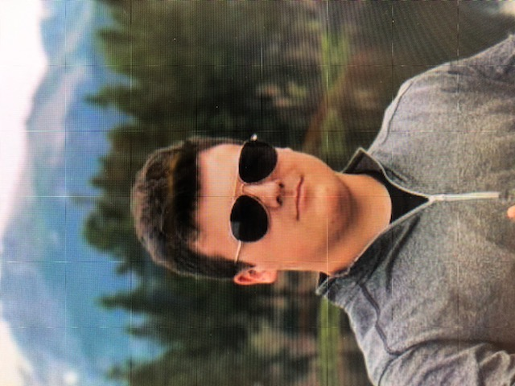

About Me

I graduated from High school in 2019 and went on to a Community College that was close to where I lived which gave easy access to furthering my education. I was able to go here for a low cost because I was in the A+ program at my school that supplied me money to pay for my classes.
I would be at Maple Woods Community College from August 2019 until May 2021. Here I was getting most of my general education out of the way to focus on my career path at Mizzou later that year. At Mizzou I am majoring in digital storytelling which uses video, audio, and images to create a story using technology. If all things go as planned, I will be graduating from Mizzou in May 2023. A quote that I like regarding school/work is one my grandpa used to tell me.
"Hard work will open gates of success wherever you go.” - Kelly Eaton